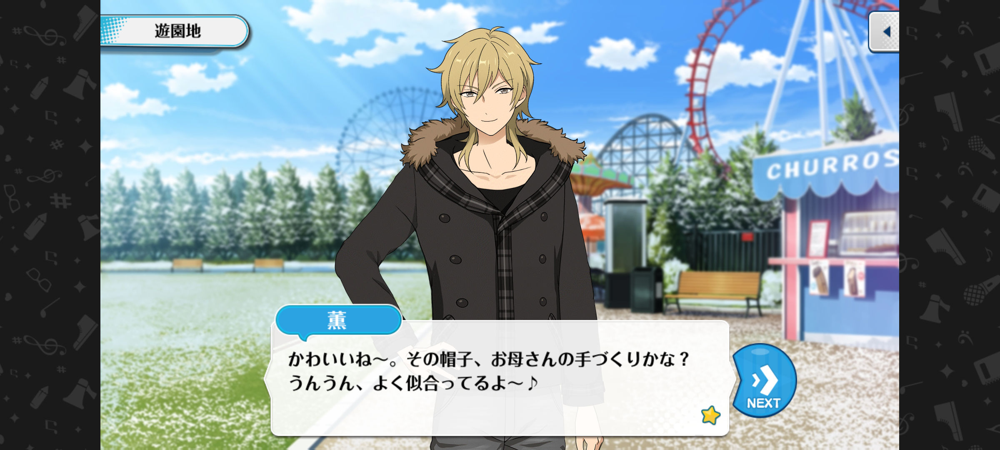
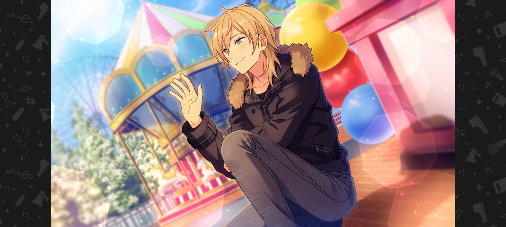
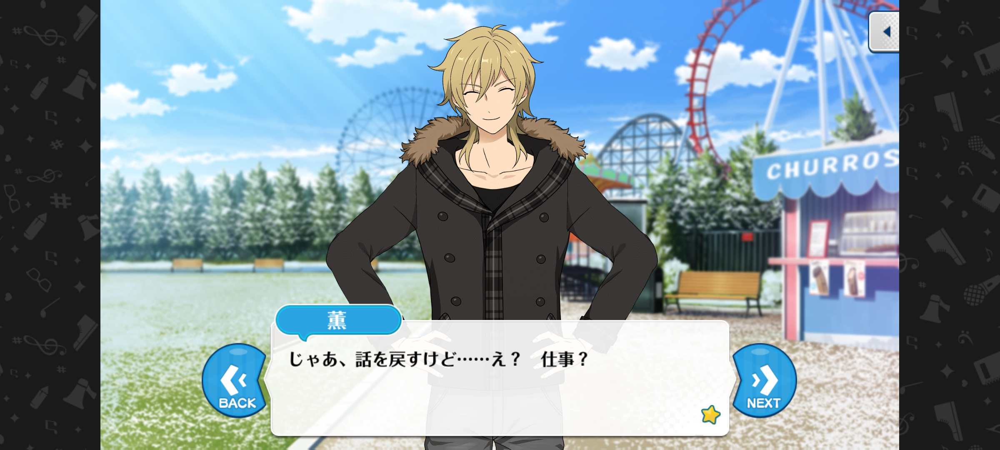
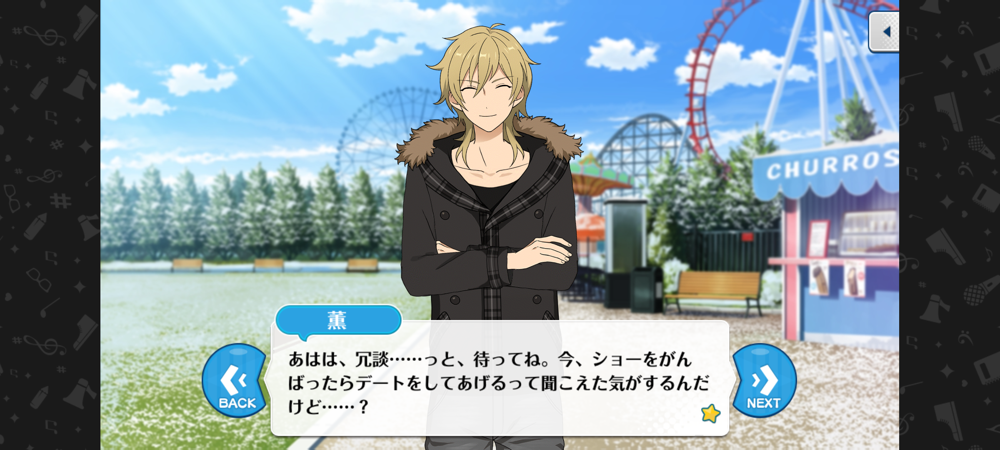

Scout! Amusement Park Show
Amusement Park Show – Chapter 3

Location: Amusement Park

Kaoru: Cuuuute~. Did your mom make that hat for you? Yupyup, it looks really good on you~♪
So, you came to the amusement park with your parents today to have some fun, huh?
Well, could you do me a favour and tell all the mums here about the kids' show that's starting at noon?
You see, me, Vampire-oniichan, Wanko-oniichan, and… Adonis-kun are going to be in it.
Well, the details aren't important. The point is, some of my friends are putting on a show for kids~♪
A Sentai show? Ahaha, no, not quite. It's not that kind of show for boys.
It's a show where onii-sans and onee-sans sing and dance together! So girls can enjoy it, too, without feeling left out~♪
Hmm? You came here with some friends? Are they girls, too?
Oh, I see~. Well, you're cute, so I'm sure your friends are cute, too, right?
Ahaha, are you embarrassed? Now I'm getting the urge to give you a hug…♪
I'm only kidding. Maybe in another ten years or so, but until then, that'd be a crime~
But, a headpat’s not off the table, right? Pat, pat ♪

Hm? Ah, looks like your mum's coming out of the souvenir shop. Hey, we're over here!
Well then, see you later. I'll be looking forward to seeing you at the show~♪
Phew… Hm? Is that, Anzu-chan? Anzu-chan!?
It really is you! What are you doing here? Ahaha, never mind that?
It's fate that we ran into each other here, so why don't we go on a date~?
When we first met, you were pretty wary of me, so I thought I'd try to close that distance between us a little.
But you've let your guard down around me lately, haven't you? Besides, a date at an amusement park is a classic~♪
Maybe I should try the straightforward approach for once… Huh? Anzu-chan?
Could you not make that face~? The one that says you don't want anyone thinking we're friends? Even I have feelings, you know. I really do~♪
Eh? Ohh, you were watching me talk to that little girl earlier?
Why did I put my hand on her head? And why was I talking to her like that? Ah, no, no, you've got the wrong idea!!
She's got a bright future ahead of her, but either way, the age gap would be way too big, wouldn't it?
If you're curious, I just wanted to know what it would be like to have a little sister. Is that so wrong?
Right~. Anzu-chan really doesn't beat around the bush, does she? But that's better than having someone string you along~♪
I've got an older sister and an older brother, but no younger sister. So I can't really say I know what it's like~♪
Speaking of which, doesn't Anzu-chan have a younger brother? If I had an older sister like you, I'd welcome that with open arms~♪
Ah, but then we wouldn't be able to go on dates. Yeah, being your little brother is out of the question, huh?

Ahaha, we've gotten a little sidetracked, haven't we?
Well, I suppose that's what happens when I just follow my own whims. But that's not so bad, is it~?♪
Anyway, let's get back to what we were talking about… Huh? Work?
Mm-hm. Anzu-chan helps us out with our costumes and acts as the go-between for our jobs, too.
I mean, running into each other at an amusement park rather than, say, at school, it’s almost too lucky, don’t you think? Ah, so that’s how you feel?
…Say, Anzu-chan. Have you talked to Koga-kun yet? If you have, could you tell me how he's doing?
Oh? You look surprised. Ah, there's no need to apologise. I was pretty surprised myself.
I'm sure Sakuma-san has already told you the whole story, but the truth is, we were supposed to put on a regular live here.
But because of a mistake, we ended up being booked for a show for children instead.
Koga-kun was feeling pretty down about the whole thing… but in the end, he decided to go along with it.
I wonder if he's still upset about it… I'm a little worried.
Honestly, I can hardly believe it myself.
Sakuma-san invited me to join UNDEAD, but I wasn't particularly interested in becoming a member.
At first, I couldn't even remember Adonis-kun or Koga-kun's names… But now, I think of them as pretty adorable juniors.
Ahaha, you think it's unusual for me to say something like that with such a serious expression~? What, did you think I wasn't capable of being serious, Anzu-chan?
When I was talking to Koga-kun and the others about today's performance, he actually checked the temperature. Apparently, it was low enough to put someone in hospital. I mean, who wants to be that cold, right~?
So, please keep that in mind, Anzu-chan. Yup, promise~?♪

Haa~... Talking with you is so refreshing, Anzu-chan. Now that I'm feeling all better, how about that date?
Ahaha, I'm joking… W-wait. Did you just say that if I do my best at the show, you'll go out with me…?
I must be hearing things, right? What's wrong, Anzu-chan? Has the cold gone to your head?
Wait, I'm sorry! Please don't take it back! You've always refused to go out with me, but my persistence has finally paid off and you've agreed!
Anzu-chan has finally recognised my charms, too~. Funfufu~♪
I'll give it everything I've got. So, you'd better be waiting for me, 'kay?♪
…Sakuma-san? I'm not quite sure why his name's suddenly come up in this conversation...
I mean, even if we were told we could perform, we wouldn't be able to go ahead because of that mix-up, right? …Wait, is there actually a way to sort this out?
Well, during the show, they'll be handing out questionnaires to the audience. And if at least half of them give us a 'satisfied' rating…
…then they've arranged for us to be allowed to perform a live set as an encore.
Thanks, Anzu-chan. Koga-kun and the others will be happy to hear that~♪
Koga-kun in particular was really worked up about the whole thing, but he seems pretty fired up about it now.
When I heard the news, I knew I had to give it my all and make sure the audience enjoyed themselves.
Anzu-chan’s truly a goddess, come to save us.
But that's just part of a producer's job? It's all right to take a little more pride in what you do, you know. But I suppose that's just what makes you you, Anzu-chan~♪
If I happen to run into Sakuma-san, I'll send you a message. Make sure your phone isn't on silent, 'kay~?